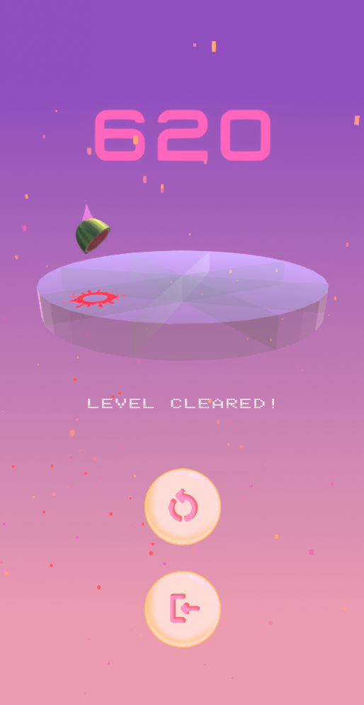
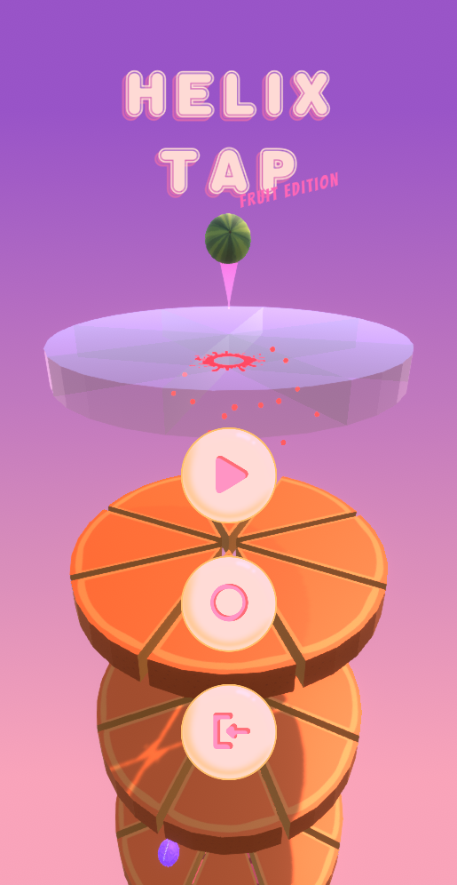

HELIX TAP
A Unity game based on Helix Jump
Helix Tap - Fruit Edition is a small prototype game based on Helix Jump I made in 5 days
The rings are made of watermelons or oranges. Tap the screen to switch fruit, only when the fruit matches the ring can it pass through.
Collect coins to up the score or powerful Gomu fruit to pass every ring and go faster.
The middle title screen button enables obstacles. Enabling this option will grant you higher points when passing through rings, but you need to swipe left or right to dodge the solid fruit parts.
Only downloadable for Windows or Android on my Itch.io page

